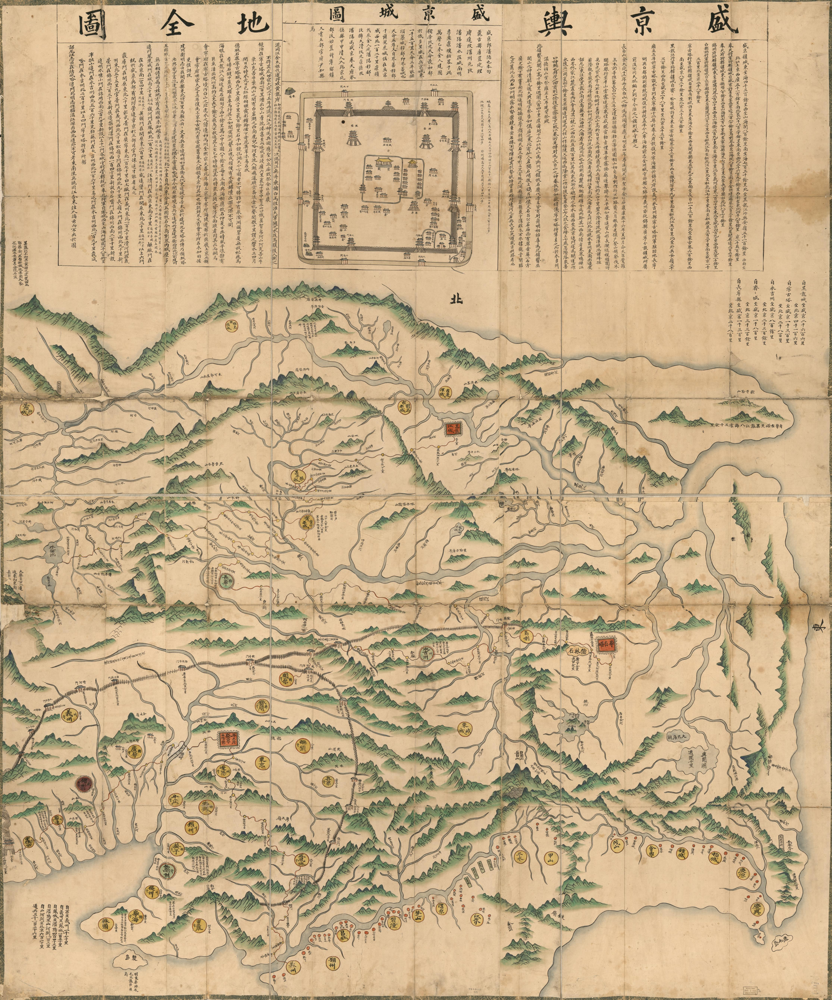

Shengjing Yudi Quantu — General Map of Shengjing Territories
盛京輿地全圖 (General Map of Shengjing) is a detailed cartographic representation of the territories
surrounding Shengjing (modern Shenyang, Liaoning). This 1734 manuscript map illustrates the administrative divisions, geographical
features, and military fortifications established during the Qing Dynasty in the Northeast.
💡 Scroll to zoom · Drag to pan · Use the +/− buttons for precise control

📜 Warner, L. (1734) Shengjing Yu Di Quan Tu. [Between 1734 and 1736] [Map]
Retrieved from the Library of Congress.